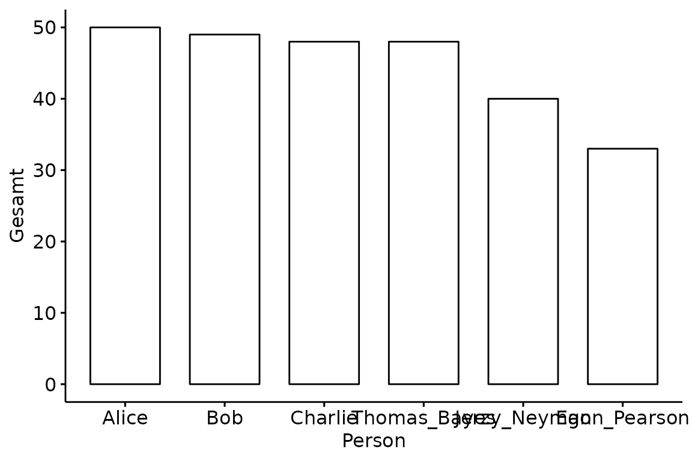
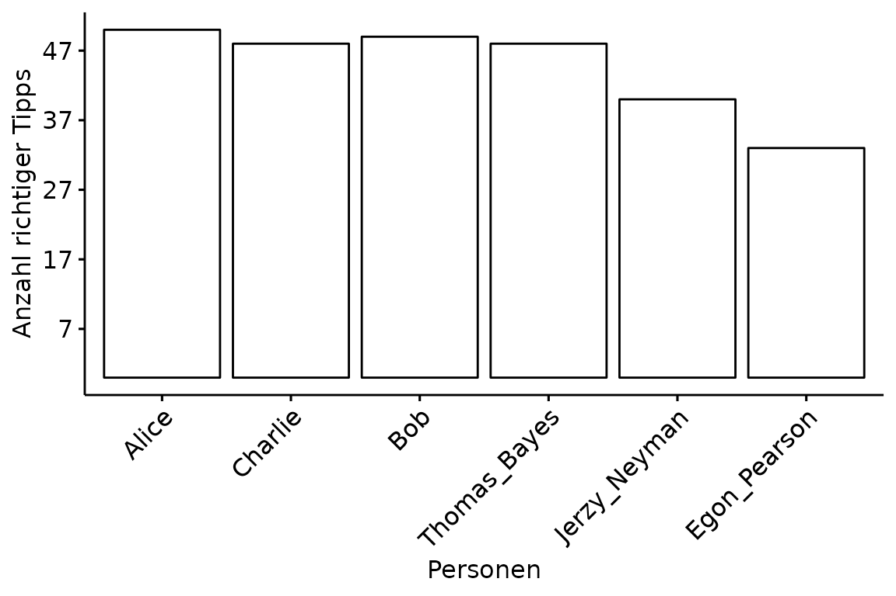
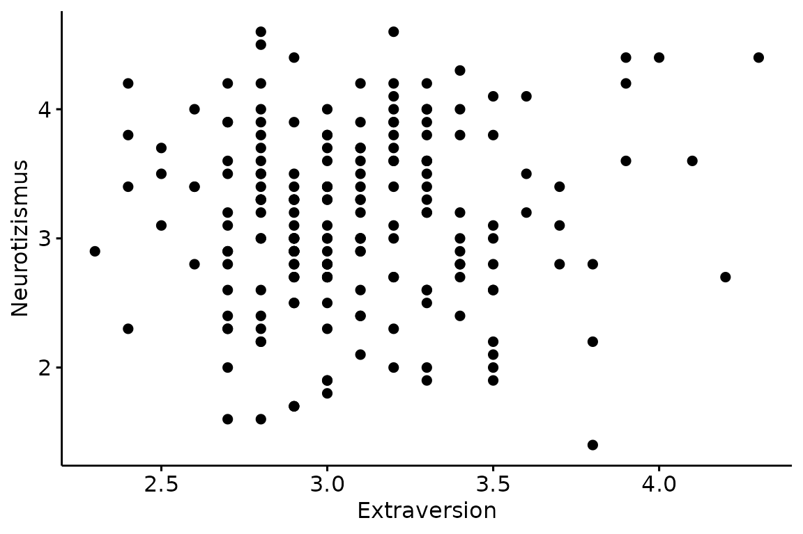
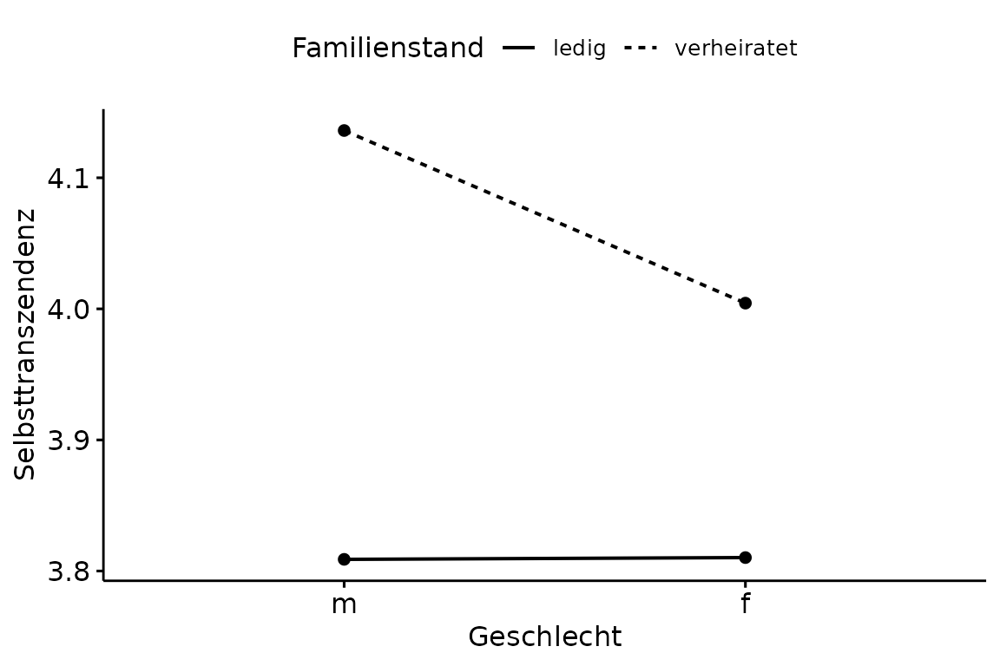

Visualisierungen
R für empirische Wissenschaften v1.0.2
Jan Philipp Nolte
Source:vignettes/04_Visualisierungen.Rmd
04_Visualisierungen.RmdEinführung
In diesem Kapitel werden wir uns das Package ggpubr genauer anschauen (basiert vollständig auf ggplot2). Die Funktionen aus dem Package sind darauf ausgelegt, schnell publikationsreife Graphen zu erstellen. Dabei verwendet man immer den selben Workflow. Zuerst bringt man die Daten ins Lange Format. Anschließend erstellt man den Graphen mit der jeweiligen Funktion mit einem vorangestellten gg. Das gg in ggpubr und allen enthaltenen Funktionen wie ggbarplot() steht für Grammar of Graphics. Den gespeichterten Graphen passt man dann mit ggpar() entsprechend an. Zum Schluss speichert man mit ggsave(). Schauen wir uns zuerst Säulendiagramme an.
Säulendiagramm
Dafür benutzen wir zunächst den im vorherigen Kapitel erstellten Datensatz namens df mit den geordneten Gesamtpunktzahlen der Personen bei der Tipp WM.
## # A tibble: 6 x 2
## Person Gesamt
## <chr> <dbl>
## 1 Alice 50
## 2 Bob 49
## 3 Charlie 48
## 4 Thomas_Bayes 48
## 5 Jerzy_Neyman 40
## 6 Egon_Pearson 33Einen Graphen zu erstellen, funktioniert intuitiv. Das erste Argument data ist der Name des Datensatzes. Auf der x-Achse möchten wir die verschiedenen Personen abgebildet haben und auf der y-Achse die jeweilige Gesamtpunktzahl.

Das sieht noch nicht sehr schön aus. Die Achsenbeschriftungen sind unklar formuliert, die Namen überlappen sich und die Abstände zwischen den angezeigten Punktezahlen auf der y-Achse sind nicht schön. Damit wir solche Attribute verändern können, müssen wir den Graphen abspeichern. Als Variablennamen benutzen wir willkürlich plot.
Diesen gespeicherten Graphen können wir nun, wie bereits erwähnt, der Funktion ggpar() übergeben. Die Achsenbeschriftungen passen wir mit xlab respektive ylab an, die Größe der Schrift mit font.x und font.y, den Winkel der Personennamen mit x.text.angle und die Abstände auf der y-Achse mit yticks.by. Im Laufe dieses Kapitels werden wir noch andere Argumente für ggpar() kennenlernen. Für eine vollständige Liste, kannst Du einfach ?ggpar ausführen. Gerade das Anpassen der Schriftgröße ist extrem wichtig beim Einfügen in Paper oder Abschlussarbeiten, da die Schriftgröße innerhalb des Graphen in der Regel nicht stark von der des Textes abweichen darf.
ggpar(p = plot,
xlab = "Personen",
ylab = "Anzahl richtiger Tipps",
font.x = 12,
font.y = 12,
x.text.angle = 45,
yticks.by = 10)
Das sieht jetzt schon schöner aus. Aber auch in der Funktion ggparplot() selber, können wir einige Anpassungen vornehmen. Wenn man die Reihenfolge verändern möchte, benutzt man order und für das Verändern der Säulenbreite width.
plot <- ggbarplot(data = df,
x = "Person",
y = "Gesamt",
order = c("Alice", "Charlie", "Bob",
"Thomas_Bayes", "Jerzy_Neyman", "Egon_Pearson"),
width = 0.9)
ggpar(p = plot,
xlab = "Personen",
ylab = "Anzahl richtiger Tipps",
font.x = 12,
font.y = 12,
x.text.angle = 45,
yticks.by = 10)
Häufig muss man gepaarte Säulendiagramme erstellen. Abwechslungshalber schauen wir uns dafür den indonesischen Datensatz an (siehe Übungsaufgabe). Genauer gesagt möchten wir uns anschauen, wie Selbsteinschätzung von Ordnung zwischen den Geschlechtern innerhalb der Familienstände variiert. Im Vergleich zu vorher kommt nun das fill und add.params Argument hinzu. Beide sind genau in der Form zwingend notwendig. Darüber hinaus fügen wir mit add den Standardfehler hinzu, wählen mit palette eine publikationsreife graue Farbpalette und stellen den Abstand zwischen den gepaarten Säulen auf 0.8.
ggbarplot(data = indonesisch,
x = "Geschlecht",
y = "Ordnung",
fill = "Familienstand",
add.params = list(group = "Familienstand"),
add = "mean_se",
palette = "grey",
position = position_dodge(0.8))
Bis auf die Legende schon wunderschön. Zum Anpassen mit ggpar() speichern wir den Graphen als paired ab. Das Argument ylim() definiert die y-Achse von 0 bis 5, legend die Position (erster Wert für Höhe auf x-Achse, zweiter für y-Achse), legend.title für den Titel der Legende und schließlich font.legend für die so wichtige Schriftgröße.
Streudiagramm
Nun gehen wir weiter zum big_five Datensatz. Wir möchten den Zusammenhang von Extraversion und Neurotizismus durch ggscatter() mit einem Streudiagramm darstellen.

Man kann auf einfache Art und Weise zusätzliche Informationen wie eine Regressiongerade, das Konfidenzintervall oder einen Korrelationskoeffezienten hinzufügen. Das Argument cor.method für die Art der Korrelation, conf.int für das Konfidenzintervall, add für die Regressionsgerade, add.params zum Anpassen der Regressionsgerade (auch hier müssen die Argumente genau in dieser Form innerhalb von list() stehen), size für die Größe der Punkte, shape für die Form und schließlich color für die Farbe.
ggscatter(data = big_five,
x = "Extraversion",
y = "Neurotizismus",
cor.method = "pearson",
conf.int = TRUE,
add = "reg.line",
add.params = list(color = "black",
fill = "gray"),
size = 3,
shape = 21,
color = "black")
Das Anpassen mit ggpar() sparen wir uns an dieser Stelle.
Boxplot
Auch Boxplots funktionieren nach dem selben Schema wie Säulen- und Streudiagramme.
Zum Ausblenden der Ausreißer setzen wir outlier.shape auf NA und zum Hinzufügen der Errobar setzen wir bxp.errorbar auf TRUE.
ggboxplot(data = big_five,
x = "Geschlecht",
y = "Neurotizismus",
outlier.shape = NA,
bxp.errorbar = TRUE)
Histogramm
Histogramme benötigen kein y Argument, da dort die Häufigkeiten abgebildet sind. Das Argument bins ist besonders wichtig, da die dargestellten Informationen über die Häufigkeiten in Abhängigkeit der Anzahl der bins (Säulen) stark variieren können.

Liniendiagramm
Auch Liniendiagramme sind einfach und schnell nach den selben Prinzipien erstellt. Greifen wir hierfür wieder auf die Gesamtpunktzahlen der Tipper zu.

ANOVA Plot
Eine Besonderheit stellt hierbei der ANOVA Plot dar, was nichts anderes als ein einfacher Mittelwertsvergleich ist. Exemplarisch sei dies an der unterschiedlichen Ausprägung von Selbsttranszendenz zwischen den Geschlechtern innerhalb der Familienstände gezeigt. Das Argument linetype ändert wenig überraschend die Art der Linie. Entscheidend ist das Argument add, weil uns nur die Mittelwerte interessieren. Das Argument size verändert optional die Dicke der Linien.
ggline(data = indonesisch,
x = "Geschlecht",
y = "Selbsttranszendenz",
linetype = "Familienstand",
add = "mean",
size = 0.7)
Speichern
Mit ggsave() kann man den Graphen einfach im derzeitigen Projektverzeichnis speichern. Wir erinnern uns, dass das Projektverzeichnis immer dort ist, wo unsere Projektdatei liegt. Wenn man sich nicht mehr sicher sein sollte, kann man dies mit getwd() herausfinden. Das erste Argument ist der Dateiname mit der gewünschten Dateiendung. Das zweite ist der zu speichernde Graph. Die Argumente danach sind optional, allerdings möchte man häufig die Breite und Höhe sowie die Auflösung (DPI) anpassen.
Mehrere Graphen auf einmal kann man mit einer Funktion aus dem rBasics Package speichern. Dafür muss man eine Liste (siehe Extras) aus den Graphen machen. Diese Liste übergibt man dann als erstes Argument der Funktion ggsave_all(). Des weiteren können Höhe, Breite und DPI Anzahl angepasst werden. Es werden automatisch jpegs erstellt und die Namen setzen sich aus den Namen in der Liste zusammen.